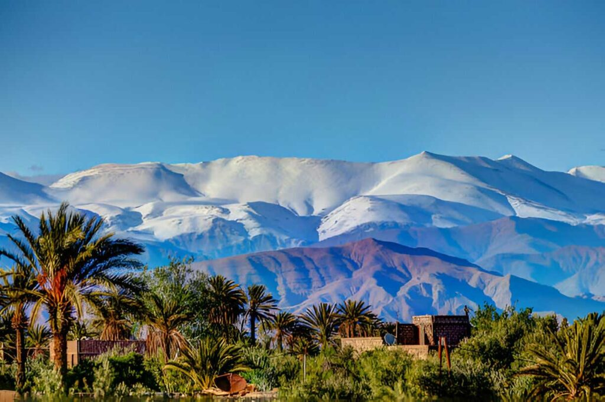

Bienvenue à Terroir Azilal
Située dans la magnifique région de Beni Mellal-Khénifra, plus précisément à Azilal, notre boutique en ligne vous propose une sélection exceptionnelle de produits du terroir. Nous mettons en avant les trésors de notre région : huiles naturelles, miels authentiques et tapis berbères artisanaux faits à la main."Le but de notre site est d’aider les jeunes et les femmes rurales à faire connaître, valoriser et vendre leurs produits ou services grâce au marketing digital, en utilisant uniquement leur téléphone, et toucher des clients aussi bien au Maroc qu’à l’étranger, sans gros moyens mais avec intelligence et créativité."
Nos Produits
Huiles Naturelles
Découvrez nos huiles d'olive extra vierge et d'argan 100% bio.
Amlou Traditionnel
Un délice à base d'amandes, de miel et d'huile d'argan.
Miels du Moyen Atlas
Un miel pur et naturel, directement récolté dans les hauteurs d’Azilal.
Tapis Artisanaux
Pièces uniques fabriquées à la main par les femmes artisanes locales.
Contactez-nous
Téléphone : +212 6 12 34 56 78
Instagram : @terroir_azilal
Commander Maintenant